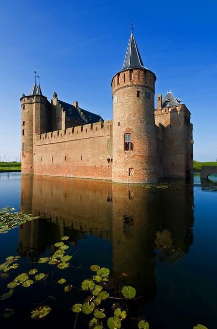
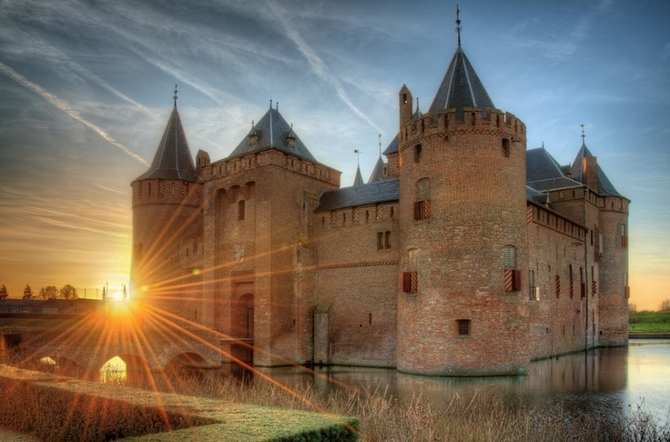
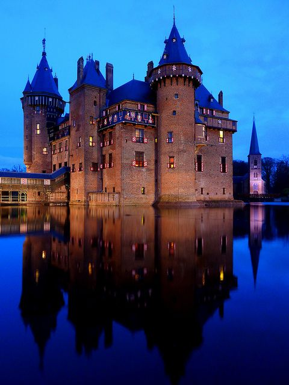
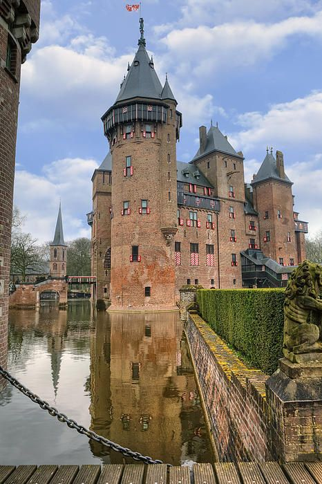
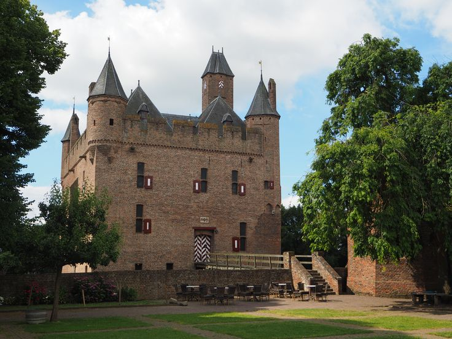
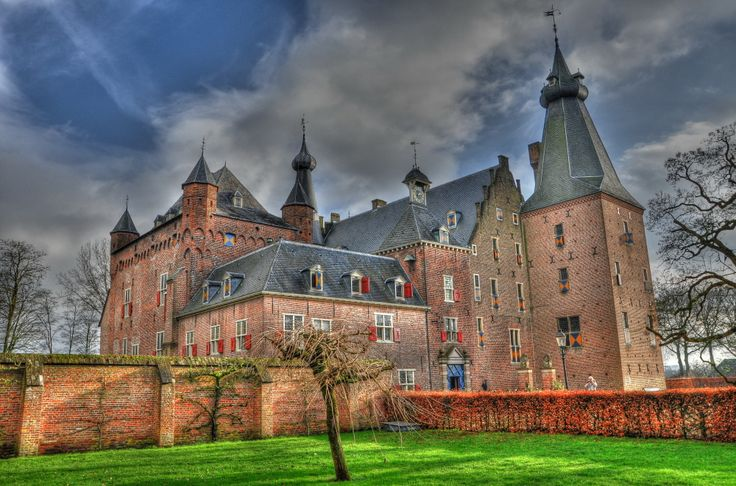
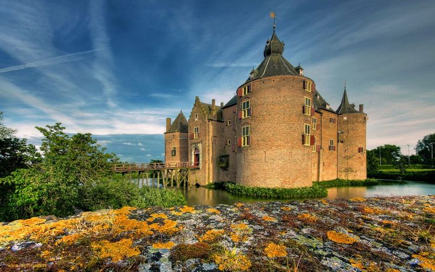
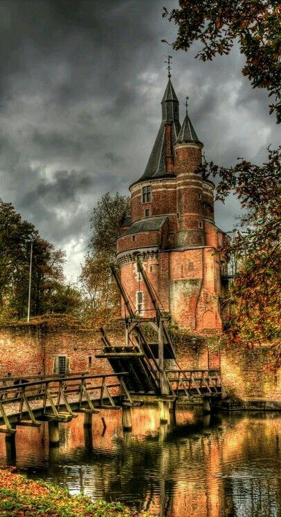
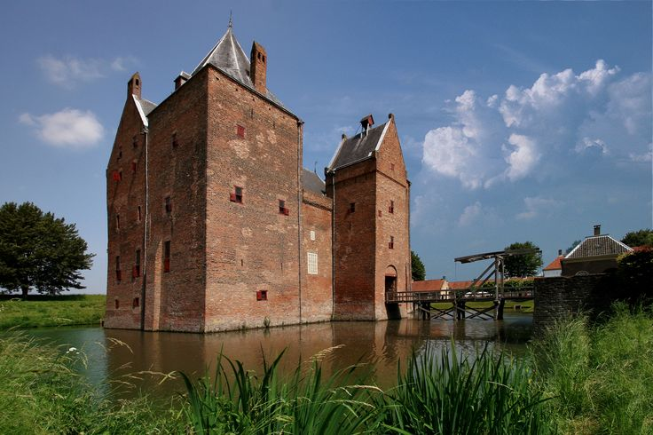

The 8 Most Impressive Castles in the Netherlands

The Netherlands has had some pretty impressive castles throughout history. Many of these medieval castles have not survived, but luckily there are still some beautiful castles worth a visit. Castles that you can still visit serve a purpose, as this is the only way to preserve them due to the high maintenance costs. For example, some serve as museums, hotels, or locations for events like weddings and fairs.
1. Muiderslot Castle


Muiderslot Castle is an impressive square-shaped medieval castle in Muiden, North Holland. It's close to Amsterdam, making it ideal for a day trip. The castle houses a national museum and has a moat with a drawbridge. Fun fact: the museum is depicted on the ace of clubs card in the standard Dutch deck.
2. De Haar Castle


De Haar Castle is the largest and most luxurious castle in the Netherlands, located near Haarzuilens, Utrecht. Its impressive interior is complemented by a chapel, park, and gardens. Every year, the Elf Fantasy Fair is held here — a perfect occasion to dress up as an elf, hobbit, witch, or any creature you like!
3. Doornenburg Castle

Doornenburg Castle consists of a smaller castle and a main castle connected by a narrow wooden bridge. It's one of the largest and best-preserved castles in the country. Originally, a fortified house called Villa Dorenburc occupied the site before it expanded into a castle.
4. Doorwerth Castle

Doorwerth Castle is a medieval castle now used as a hotel, restaurant, and event location for parties and weddings. Fun fact: it's said that the ghost of a girl who starved to death in the castle still wanders around.
5. Radboud Castle

Radboud Castle dates back to the 13th century and was built by order of Floris V to protect the area against Frisian invasions.
6. Ammersoyen Castle

Ammersoyen Castle, surrounded by water, is located in western Gelderland. Built around 1300, it was heavily damaged during World War II but has been fully restored. The surrounding area is perfect for a scenic walk.
7. Duurstede Castle

Duurstede Castle is located in Wijk bij Duurstede, Utrecht. The castle has an impressive tower known as the 'Bourgondisch Toren.' Fun fact: it was used in the Dutch movie 'De Diamant' featuring Bassie & Adriaan.
8. Slot Loevestein

Slot Loevestein, near Poederoijen, was built by the knight Dirc Loef van Horne. Originally used as a residence for raids and illegal toll collection, it now houses a museum and is one of the Netherlands' most famous castles.